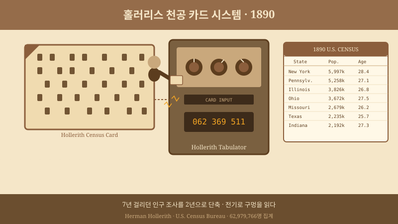

1890
홀러리스 천공 카드 시스템
통계국 서기는 “이번엔 제때 끝낼 수 있을까?”라며 걱정했지만, 허먼 홀러리스의 펀치 카드와 전기 집계기가 기다리던 답을 내놓았습니다.

1880년 미국 인구 조사는 거대한 재앙이었어요. 5천만 명의 데이터를 종이 카드에 손으로 적고, 손으로 분류하고, 손으로 집계해야 했습니다. 이 작업이 무려 7년이나 걸렸어요. 1890년 인구 조사를 앞두고 통계국 사람들은 절망했습니다. "이번엔 인구가 더 늘었어요. 같은 방식으로 하면 10년이 걸려서 다음 인구 조사 시점이 돼버려요. 도무지 끝이 안 나요."
한 발명가 허먼 홀러리스는 발칙한 발상을 합니다. "종이 카드에 사람 정보를 적되, 글자가 아니라 구멍으로 적자. 25살은 25번째 위치에 구멍, 남자는 남자 위치에 구멍, 직업은 직업별로 구멍. 그리고 그 카드들을 기계에 통과시키면 전기가 구멍으로 통과하면서 자동으로 집계되게."
1890년 인구 조사에 도입된 홀러리스 천공 카드 시스템은 기적을 만들었어요. 7년 걸리던 작업이 1년으로 줄었습니다. 한 통계국 관리자는 환호했어요. "기계가 카드 6만 장을 1시간에 처리해요! 그것도 사람보다 정확하게요. 우리가 해방됐어요!" 이 성공으로 홀러리스는 회사를 세웠고, 그 회사가 나중에 합병되어 — 짐작하셨겠지만 — IBM이 됩니다.
이게 "데이터를 기계가 처리한다"는 발상의 첫 본격적 사례였어요. 그 후 80년간 펀치 카드는 컴퓨터의 표준 입력 방식이었고, 1970년대까지도 프로그래머들은 카드에 구멍을 뚫어 컴퓨터에 일을 시켰습니다. 오늘날 모든 데이터베이스의 정신적 조상이 1890년의 한 인구 조사에서 시작됐어요. "수많은 정보를 빠르게 분류하고 집계한다"는 컴퓨터 산업의 핵심 미션이 처음 모습을 드러낸 순간이었습니다.
천공 카드(Punch Card)는 종이에 뚫린 구멍의 위치로 데이터를 저장하는 방식입니다. 오늘날 우리가 사용하는 엑셀의 행과 열처럼, 카드의 특정 위치가 나이, 성별 등의 정보를 의미했습니다. 기계가 전기를 이용해 이 구멍들을 빠르게 읽어내면서, 수작업으로 하던 계산을 자동화할 수 있었습니다.